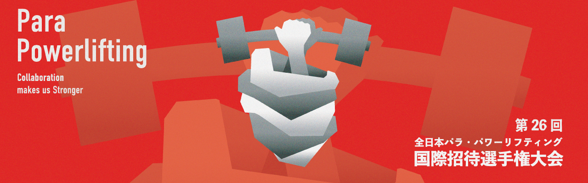

Parapower
メインメニュー
🏠
ホーム
⚡
練習モード
🎮
競技判定疑似体験
⚖️
判定を予想しよう
📖
ルール・遊び方
その他
ℹ️
クレジット
🔗
連盟公式サイト
🐦
Twitter
←
戻る
1タップ速度測定
タップ回数
0
最速時間
---
ms
平均時間
---
ms
現在の時間
---
ms
タップエリアをクリックして開始
👆
測定結果
タップ回数
0 回
最速時間
---
平均時間
---
もう一度
メニューに戻る